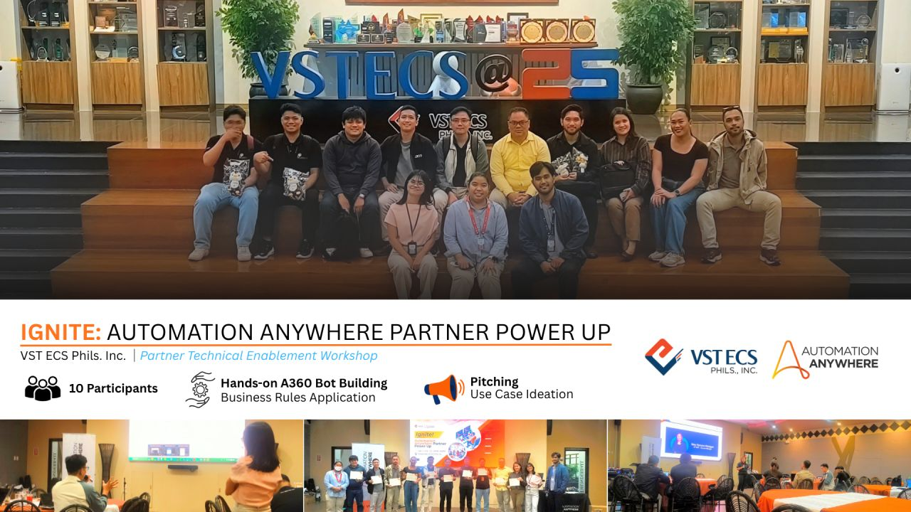

Seminars & Training
Continuous learning has always been an important part of my journey in Information Technology. Throughout my career, I have participated in various seminars, technical training programs, workshops, certifications, partner enablement sessions, and hands-on technical learning activities covering different areas of enterprise technology. This section provides a record of selected training and professional development activities I have attended over the years. These programs have allowed me to continuously expand my knowledge, strengthen my technical capabilities, and gain practical exposure to emerging technologies, platforms, solutions, and industry practices. More than simply collecting certificates, I consider professional development an opportunity to learn, apply, and translate technology into practical business solutions. The knowledge gained from these sessions has contributed to my work in Solution Architecture, Cloud & Infrastructure, Enterprise Technology, Technical Pre-Sales, Business Applications, Automation, and IT Solutions Delivery. The programs featured here represent part of my continuing effort to stay technically current, professionally relevant, and ready to understand and address the evolving technology requirements of businesses and organizations. My Journey of Continuous Learning Technology continues to evolve—and so does the responsibility of an IT professional to keep learning. The trainings and enablement programs documented here reflect that mindset: learn continuously, understand deeply, apply practically, and share knowledge responsibly.
IGNITE: Automation Anywhere Partner PowerUp Bot Camp
Automation Anywhere Automation (A360)

A partner enablement program focused on hands-on Automation Anywhere Automation 360 training, including bot building, business rules application, and technical enablement.
Key Learning Areas
- Automation 360 bot development and workflow design
- Business rules and process automation
- Applying automation to practical business scenarios
- Automation architecture and implementation considerations
- Technical enablement for partner-led solution delivery
Learning Takeaway
The hands-on sessions provided practical insight into how automation can be designed and applied to real-world business processes and operational requirements.
The experience also reinforced the importance of first understanding the business process, identifying suitable automation opportunities, and then selecting the appropriate technology to support the desired outcome.
Macrologic Diversified Technologies Inc.
VST ECS Philippines
Automation Anywhere